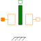

HollowCylinderRadialFluxHollow cylinder with radial flux; constant permeability |

|
Information
Parameters (5)
| useSupport |
Value: false Type: Boolean Description: = true, if support flange enabled, otherwise implicitly grounded |
|---|---|
| mu_r |
Value: Type: RelativePermeability Description: Relative magnetic permeability |
| dlBydx |
Value: 1 Type: Integer Description: Derivative of flux tube's varying dimension with respect to armature position; set to +1 or -1 |
| r_i |
Value: 0.01 Type: Radius (m) Description: Inner radius of hollow cylinder |
| r_o |
Value: 0.015 Type: Radius (m) Description: Outer radius of hollow cylinder |
Connectors (4)
| port_p |
Type: PositiveMagneticPort Description: Positive magnetic port |
|
|---|---|---|
| port_n |
Type: NegativeMagneticPort Description: Negative magnetic port |
|
| flange |
Type: Flange_b Description: Generated reluctance force at armature position |
|
| support |
Type: Support Description: Support/housing of component |
Used in Components (1)
|
Modelica.Magnetic.FluxTubes.Examples.MovingCoilActuator.Components Detailed actuator model for rough magnetic design of actuator and system simulation |